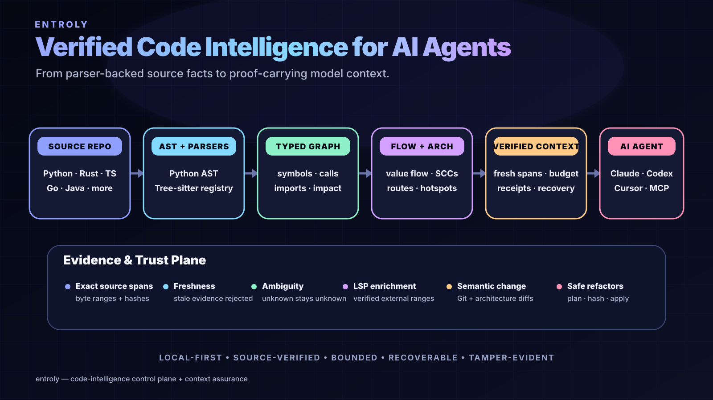

LLM token economics · AI efficiency · context optimization
Reduce avoidable AI tokens. Preserve the evidence that matters.
Entroly is a local-first Context Assurance and code-intelligence system for AI agents. It optimizes the economics of model context by selecting useful evidence under a budget, compressing it recoverably, preserving cache-stable prefixes where possible, and recording what changed.

Token saving is an evidence-allocation problem
1 · Select
Rank useful code, messages, files, tool output, logs, or RAG evidence under an explicit budget instead of blindly sending everything.
2 · Compress
Use structured and recoverable compression after selection. Small inputs can pass through rather than manufacturing savings.
3 · Recover
Omitted originals can remain content-addressed and recoverable, so token reduction is not the same as permanent deletion.
4 · Verify
Context Receipts and verification surfaces make selection, omissions, and evidence support inspectable.
How Entroly approaches AI cost saving
API input economics: fewer unnecessary provider-bound input tokens can reduce measured input cost on routes where the optimized request is actually sent to a paid model. Fixed-price subscriptions are different: lowering tokens does not necessarily lower the subscription fee.
Cache economics: Entroly includes cache-alignment behavior designed to keep eligible stable prompt prefixes byte-stable. Provider-reported cache hits and discounts remain authoritative.
Context-window economics: token saving also creates headroom for longer sessions, larger repositories, or more useful evidence inside a fixed model context window.
Related Entroly capabilities
- Verified code intelligence for AI agents — AST/Tree-sitter structure, call/dependency graphs, architecture and verified source context.
- Context engineering — selection, compression and delivery of useful model context.
- Entroly Memory OS — budget-aware working, episodic and semantic memory.
- Public evidence policy — what Entroly does and does not claim.
Frequently asked questions
Is context compression the same as token optimization?
No. Compression is one technique. Entroly treats token optimization as a broader control problem that includes evidence selection, context budgeting, cache alignment, compression, recovery, receipts, and verification.
Does lower token usage always mean a better answer?
No. Aggressive compression can remove useful evidence. Entroly therefore publishes quality measurements separately from token reduction and can pass through context when reduction is not justified.
Can Entroly help local models too?
Yes. Token budgets matter for local models even when there is no API bill: smaller, better-selected context can reduce context pressure and leave more room for useful evidence. Hardware/runtime performance still depends on the local model stack.